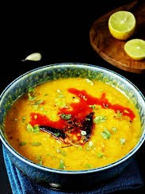

🍲 Masoor Dal

Ingredients
- 1 cup red lentils (masoor dal)
- 3 cups water
- 1 medium onion, chopped
- 1 tomato, chopped
- 2 cloves garlic, minced
- 1/2 tsp turmeric powder
- 1/2 tsp cumin seeds
- 1–2 green chilies, slit
- Salt to taste
- 1 tbsp oil or ghee
- Fresh coriander leaves for garnish
Instructions
- Wash the lentils thoroughly and drain.
- In a pot, combine lentils, water, turmeric, salt, and bring to a boil.
- Simmer for 20–25 minutes until the lentils are soft and cooked.
- In a separate pan, heat oil or ghee. Add cumin seeds, chopped onions, garlic, and green chilies.
- Sauté until the onions are golden, then add chopped tomatoes and cook until soft.
- Mix the tempering into the cooked dal and stir well.
- Simmer for another 5 minutes. Garnish with coriander leaves.
Serve With
- Steamed rice
- Roti or paratha
- Pickle and papad
💡 Tip: Add a squeeze of lemon juice for extra flavor before serving.